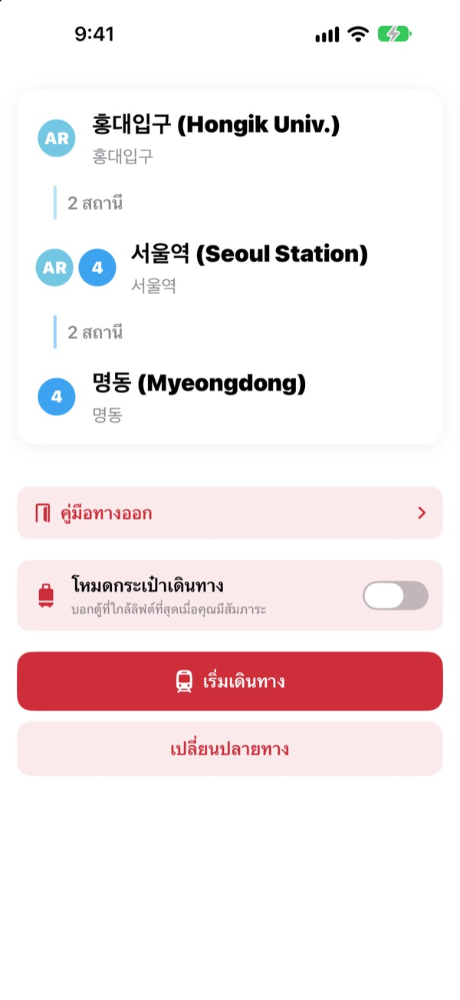
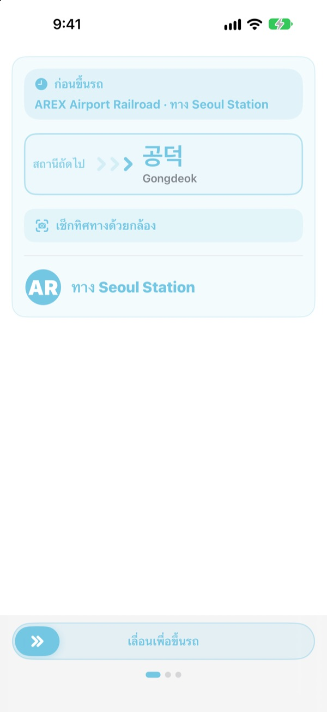
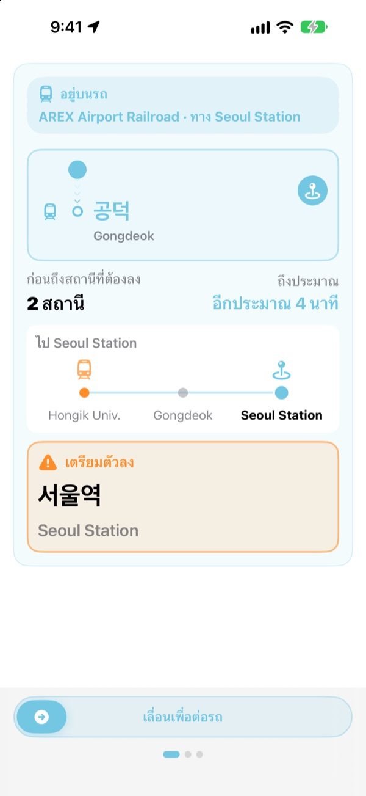
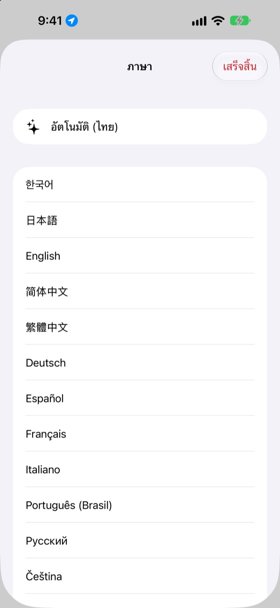

ขึ้นถูกฝั่ง
ลงถูกสถานี
เลือกสถานีต้นทางกับปลายทาง แล้ว KORA จะบอกว่าต้องขึ้นขบวนไหน ตรงตามป้ายบนชานชาลาทุกตัวอักษร ระหว่างนั่งจะคอยตามว่าตอนนี้ถึงสถานีไหน และเตือนเมื่อถึงเวลาลง
ค้นหาเส้นทาง ทิศทางขบวน และเวลารถเข้าแบบเรียลไทม์ใช้ได้ฟรี

ลองนั่งดู
คุณอยู่ที่สถานี Hongik Univ. สาย AREX เลือกสถานีที่จะลง แล้วแตะ “เริ่มเดินทาง” เพื่อดูทิศทางขบวนและการเตือนให้ลงแบบเดียวกับในแอป
เคยยืนงงบนชานชาลาไหม ว่าต้องขึ้นขบวนไหน
แอปแผนที่บอกแค่สาย แต่บนชานชาลามีแค่ป้ายที่เขียนชื่อสถานีที่ไม่เคยได้ยิน ขึ้นผิดฝั่งก็ต้องย้อนกลับหลายสถานี ฟังประกาศไม่ทันก็เลยสถานี KORA บอกขบวนของคุณด้วยคำเดียวกับป้าย และเตือนก่อนถึงสถานีที่ต้องลง
บอกด้วยคำเดียวกับป้าย
ขบวนที่ต้องขึ้นแสดงตรงตามป้ายปลายทางบนชานชาลาและบนตัวรถ ถ้ายังไม่แน่ใจ ส่องกล้องไปที่ป้ายบนชานชาลาหรือป้ายปลายทางของรถไฟ แล้ว KORA จะบอกทันทีว่าไปถูกทางไหม
การอ่านข้อความทำบน iPhone ของคุณทั้งหมด

ไม่เลยสถานีอีกต่อไป
KORA ใช้เวลารถเข้าแบบเรียลไทม์ GPS การออกตัวและหยุดของรถไฟ และประกาศบนรถร่วมกัน เพื่อรู้ว่าคุณอยู่ตรงไหน เมื่อใกล้ถึงจะขึ้นว่า “เตรียมตัวลง” แล้วตามด้วย “ลงเดี๋ยวนี้!” พร้อมการสั่น
ดูความคืบหน้าได้ทั้งบนหน้าจอล็อกและ Dynamic Island

23 ภาษา ชื่อสถานีเกาหลีไม่หาย
ใช้ทั้งแอปได้ 23 ภาษา เริ่มต้นตามภาษาของ iPhone ชื่อสถานีแสดงเป็นภาษาเกาหลีคู่กับตัวสะกดโรมันบนป้ายสถานี จึงเทียบกับป้ายบนชานชาลาได้ทันที

เริ่มได้ใน 3 ขั้นตอน
- 1
ตั้งสถานีต้นทาง
ให้ GPS หาสถานีที่ใกล้ที่สุด หรือเลือกเอง
- 2
เลือกปลายทาง
การเปลี่ยนสาย จำนวนสถานี และขบวนที่ต้องขึ้นจะขึ้นมาทันที
- 3
แตะ “เริ่มเดินทาง”
หน้าจอและการสั่นจะบอกเมื่อถึงเวลาลง
แต่ละสิทธิ์ใช้ทำอะไร
- ตำแหน่ง
- หาสถานีที่ใกล้ที่สุด
- กล้อง
- อ่านป้ายชานชาลาและป้ายปลายทางเพื่อเช็กทิศทาง
- ไมโครโฟนและการรู้จำเสียงพูด
- จับชื่อสถานีและฝั่งประตูที่เปิดจากประกาศบนรถ
- การเคลื่อนไหวและฟิตเนส
- ตรวจจับการออกตัวและหยุด เพื่อให้รู้สถานีปัจจุบันแม่นขึ้น
ทุกสิทธิ์เป็นตัวเลือก ถ้าไม่อนุญาตก็ยังเลือกสถานีเองและได้เส้นทางกับการเตือนให้ลงตามปกติ ตำแหน่ง กล้อง และประกาศประมวลผลบนอุปกรณ์ของคุณเท่านั้น ไม่มีการบันทึกเสียง เก็บ หรือส่งออกไป
หาเส้นทางฟรีเสมอ ส่วนตัวช่วยระหว่างเดินทางอยู่ใน KORA Pro
ฟรี
- ค้นหาเส้นทางและการเปลี่ยนสาย
- ป้ายปลายทางของขบวนที่ต้องขึ้น
- เวลารถเข้าแบบเรียลไทม์
- เช็กทิศทางด้วยกล้อง
- สถานีปัจจุบันและการเตือนให้ลงบนหน้าจอ
- ใช้ฟีเจอร์ Pro ได้ทั้งหมดใน 3 การเดินทางแรก
KORA Pro
- ทุกการเดินทาง: นำทางบนหน้าจอล็อก ฟังประกาศ และสั่นเตือนตอนลง
- คู่มือทางออก: สถานที่รอบแต่ละทางออกของสาย 1–8 ในโซล
- เตือนรถไฟขบวนสุดท้ายของสาย 1–9
- โหมดกระเป๋าเดินทาง: ตู้ที่ใกล้ลิฟต์ที่สุดในสาย 1–8
จ่ายครั้งเดียว ใช้ได้ตลอด ไม่ใช่การสมัครสมาชิก
ใช้การเดินทางฟรีหมดแล้วก็ยังนั่งต่อได้ ความคืบหน้าบนหน้าจอยังอยู่ แค่หน้าจอล็อก การฟังประกาศ และการสั่นจะหยุดไว้ก่อน
คำถามที่พบบ่อย
แอปหาสถานีของฉันไม่เจอ หรือแสดงสถานีผิด
ไปที่ การตั้งค่า > ความเป็นส่วนตัวและความปลอดภัย > บริการหาตำแหน่ง > KORA เลือก “ขณะใช้แอป” และเปิด “ตำแหน่งที่แม่นยำ” ใต้ดินหรือในอาคารใหญ่ GPS อาจคลาดเคลื่อน ให้แตะการ์ดสถานีปัจจุบันด้านบนแล้วเลือกเอง ทุกฟีเจอร์ใช้ได้แม้ไม่อนุญาตตำแหน่ง
เช็กทิศทางด้วยกล้องใช้อย่างไร
เมื่อเส้นทางขึ้นแล้ว เปิดการเช็กทิศทางด้วยกล้อง แล้วส่องให้ป้ายบนชานชาลาหรือป้ายปลายทางของรถไฟเต็มกรอบ จะแม่นที่สุดเมื่อส่องตัวอักษรเกาหลี ถ้าป้ายมืด อยู่ไกล หรือเอียงมาก ให้เข้าไปใกล้ขึ้นแล้วส่องตรง ๆ ผลลัพธ์เป็นแค่ตัวช่วย ถ้าไม่แน่ใจให้ดูป้ายในสถานีประกอบด้วย
เวลารถเข้าแบบเรียลไทม์ไม่ขึ้น
ข้อมูลมาจาก Seoul Open Data Plaza ต้องใช้อินเทอร์เน็ต และมีเป็นหลักในสายของเขตมหานครโซล ถ้าไม่มีเน็ตหรือไม่มีข้อมูลเรียลไทม์ KORA จะเปลี่ยนไปใช้การประมาณจากตารางเวลา GPS และมาตรวัดความเร่งโดยอัตโนมัติ และนำทางต่อไป การค้นหาเส้นทางใช้ได้แม้ไม่มีเน็ต
การเตือนให้ลงมาเร็วหรือช้าไปนิด
ใต้ดินสัญญาณ GPS อ่อน การประมาณสถานีปัจจุบันจึงอาจช้า ถ้าอนุญาตไมโครโฟน KORA จะใช้ประกาศบนรถแก้ตำแหน่งให้แม่นขึ้น การเตือนเป็นแค่ตัวช่วย ควรฟังประกาศและดูป้ายสถานีด้วย
เปลี่ยนภาษาอย่างไร
KORA เริ่มตามภาษาของ iPhone กดค้างที่การ์ดสถานีบนหน้าจอหลัก (สถานีปัจจุบันหรือปลายทาง) เพื่อเปิดหน้าเลือกภาษา แล้วเลือกจาก 23 ภาษา
กิจกรรมสดไม่ขึ้นบนหน้าจอล็อก
ตรวจดูที่ การตั้งค่า > แอป > KORA (iOS รุ่นเก่าคือ การตั้งค่า > KORA) ว่าเปิดกิจกรรมสดไว้ จะขึ้นเมื่อเริ่มนำทางการเดินทาง และสิ้นสุดเมื่อปิดแอปทั้งหมด Dynamic Island มีเฉพาะ iPhone รุ่นที่รองรับ
รองรับเมืองไหนบ้าง
ประมาณ 930 สถานีในเขตมหานครโซล (โซล คย็องกี และอินช็อน รวม GTX-A, AREX, สายชินบุนดัง และรถไฟฟ้ารางเบา) ปูซาน แทกู กวังจู และแทจ็อน เปลี่ยนเมืองได้ที่ปุ่มภูมิภาคด้านบนของหน้าเลือกสถานี
ลองใช้ก่อนเดินทางได้ไหม
ได้ เลือกสถานีต้นทางและปลายทางเอง แล้วดูเส้นทาง การเปลี่ยนสาย และทิศทางขบวนได้จากทุกที่ในโลก
KORA Pro เป็นแบบสมัครสมาชิกไหม
ไม่ใช่ เป็นการซื้อครั้งเดียวที่ใช้ได้ตลอด และใช้กับการแชร์กันในครอบครัวได้ ถ้าติดตั้งแอปใหม่ ให้แตะ “กู้คืนการซื้อ” ในหน้า Pro
ข้อมูลของฉันถูกจัดการอย่างไร
ไม่ต้องสมัครบัญชีและไม่มีโฆษณา ตำแหน่ง กล้อง และการฟังประกาศประมวลผลบนอุปกรณ์ทั้งหมด ไม่มีการเก็บหรือส่งออกไป เราเก็บเฉพาะสถิติการใช้งานแบบไม่ระบุตัวตนเพื่อปรับปรุงแอป
รองรับการช่วยการเข้าถึงไหม
KORA รองรับ VoiceOver และตัวอักษรขนาดใหญ่ ยินดีรับคำแนะนำเพื่อปรับปรุงการช่วยการเข้าถึงเสมอ
ไม่มีสถานีที่ต้องการ ชื่อสถานีแปลก หรือมีคำถามอื่น ส่งมาที่ mizzking75@gmail.com ได้เลย ถ้าบอกเวอร์ชันแอป รุ่น iPhone และสถานีที่ใช้ จะช่วยให้ตรวจสอบได้เร็วขึ้น